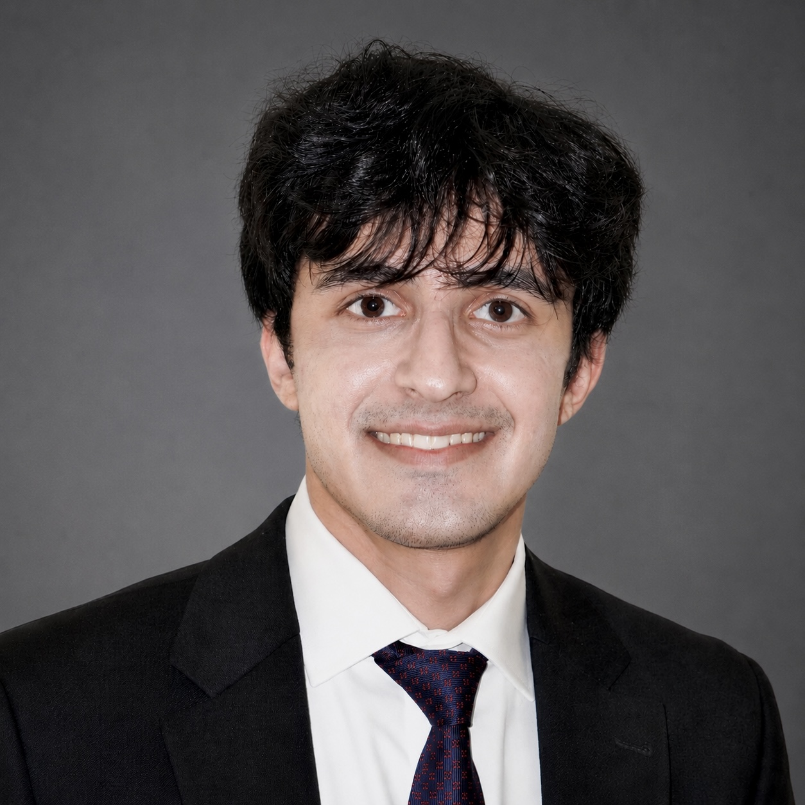

I am a U.S. International Medical Graduate and postdoctoral research fellow at Harvard Medical School and Brigham and Women’s Hospital. My academic journey began in Pakistan, where I developed a strong foundation in medicine and research through rigorous training and early exposure to clinical care. My interest in Interventional Radiology was shaped through hands-on clinical experience and research exposure, particularly during my rotation at Washington University in St. Louis, where I observed a wide range of image-guided procedures including embolization and tumor ablation. :contentReference[oaicite:0]{index=0} Currently, I am working as a Clinical Research Fellow at Brigham and Women’s Hospital, where I am actively involved in prospective embolization trials, focusing on patient screening, procedural planning, angiographic interpretation, and longitudinal outcome analysis. :contentReference[oaicite:1]{index=1}
My current research focuses on developing objective imaging biomarkers to evaluate procedural success in embolization therapies. I am particularly interested in studying vascular flow dynamics and their relationship with patient-reported outcomes, with the goal of improving treatment standardization and clinical effectiveness.
I am currently working as a Research Fellow at Brigham and Women’s Hospital and Harvard Medical School, where I contribute to clinical trials and translational research in interventional radiology, particularly in embolization therapies. :contentReference[oaicite:2]{index=2}
My prior research experience includes work as a research assistant at LUMS, where I studied immune impairments in type 2 diabetes and their role in infectious disease susceptibility. :contentReference[oaicite:3]{index=3}
I have also gained laboratory experience in histopathology, tissue engineering, genetics, and molecular biology techniques including PCR, ELISA, and flow cytometry.
I completed a hands-on elective in Interventional Radiology at Washington University in St. Louis, where I gained exposure to advanced procedures including angioplasty, embolization, tumor ablation, and image-guided interventions. :contentReference[oaicite:4]{index=4}
I have also completed observerships in Interventional Radiology and Neurosurgery at Lenox Hill Hospital, where I observed procedures such as Y-90 radioembolization, thrombectomy, and fluoroscopic-guided biopsies. :contentReference[oaicite:5]{index=5}
Harvard Medical School
Brigham and Women’s Hospital
Email: ahussain8@bwh.harvard.edu
